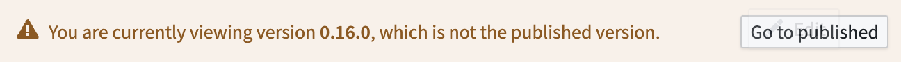

Module versioning allows builders to safely and iteratively build Workshop applications; the version accessible to end users can be controlled by publishing a stable version of the module. This allows for continuous development on a live Workshop application without necessarily exposing changes to end users when the module is saved.
The Versions dialog is where builders can view a history of the saved versions for a module. Each saved version displays a timestamp, editor, and description if available. For each saved version, builders have the option to:

:::callout{theme="neutral" title="Edit a previous version of a module"} To edit a previous version of a module, follow the steps below: * Ensure the Automatically publish when saving toggle switch is off in the Versions dialog. * Revert to the version you would like to edit. * Create a duplicate copy of the selected version of the module with File > Duplicate File. * Revert the original module to the newest version, and make any desired edits to the duplicate copy you created. :::
The Versions dialog is also where builders can go to edit settings related to saving and versioning actions:

Use the Changelog panel to visualize differences between module versions. You can select:
The Changelog panel highlights additions, deletions, changes, moves, and newly unused elements. You can inspect JSON diffs to see the exact modifications and review a visual hierarchy to understand how changes relate to nested components.
When developing on a branch, you may need to rebase before merging your Workshop changes into main if main has changed since your last save. Rebasing applies your branch's changes to the latest main version of the module and surfaces any merge conflicts that must be resolved.
The rebasing user interface uses the Changelog panel to visualize changes and highlight conflicts, such as when the same widget was modified on both main and your branch. Once conflicts are resolved, save to finish the rebase, and then proceed to merge your branch into main.
For a complete walkthrough, see Rebasing and conflict resolution.